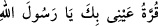
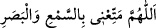
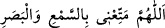
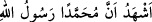
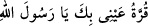
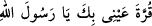

Allâh’ın Rasûlü)”, ikinci defa söylenişini duyunca “ (Gözümün
aydınlığı seninledir, yâ Rasûlallah)” denilmesi, ardından baş parmakların tırnakları
gözlerin
üzerine
konulduktan
sonra
“
(Allâh’ım
beni
duyduklarımdan ve gördüklerimden faydalandır)” denilmesi müstehabdır. Çünkü
Rasûlullah (s.a.) o kimseye rehber olup onu cennete götürecektir.”
Bazıları
şöyle
demiştir:
Baş
parmakların
arkasını
gözlere
sürüp
“ duâsını okusun. Salât-ı Necmî’de şöyle buyrulmuştur: “Her iki
baş parmağının tırnağını gözünün üzerine koyar, ama sürtmez.”
Muhît’ta nakledilmiştir ki: Hz. Peygamber (a.s) mescide girdi, sütunun yanına oturdu.
Ebû Bekir Sıddîk da O’nun yanına oturmuştu. Bilâl kalktı ve ezan okumaya başladı. “ deyince Hz. Ebû Bekir her iki baş parmağının tırnağını gözlerine
koyup
“ (Gözümün aydınlığı seninledir, yâ Rasûlallah)” dedi. Bilâl ezanı
bitirince Hz. Peygamber (a.s): “Ey Ebû Bekir, her kim senin yaptığın gibi yaparsa
Cenâb-ı Hak onun eski ve yeni günahlarını bağışlar, ister kasden ve ister hata ile
işlediği günah olsun, fark etmez.” buyurdu.
Hz. Şeyh İmâm Ebû Tâlib Muhammed b. Ali Mekkî’nin (Allah derecesini
yükseltsin) Kûtü’l-kulûb’da İbn Uyeyne’den (r.a) rivâyet ettiğine göre, Hz. Peygamber
(a.s.) Muharrem ayının ilk onunda bir gün mescide girdi. Cuma namazını edâdan sonra
sütuna yakın bir yerde durdu. Ebû Bekir (r.a.) O’nun yanına oturdu. Bilal (r.a.) ikindi
namazının ezanını okumak için kalktı. “a ulaşınca Sıddîk (r.a.) baş
parmaklarının dışını gözlerine sürdü ve: “ (Gözümün aydınlığı
seninledir, yâ Rasûlallah)” dedi. Bilal (r.a.) ezanı bitirince Hz. Rasûl (s.a.): “Ey Ebû
Bekir, her kim şevk ile bana kavuşma ümidiyle senin söylediğini söyler ve yaptığını
yaparsa, Allah Teâlâ onun yeni ve eski, bilerek ve bilmeyerek, gizli ve açıktan işlediği
günahlarını afveder. Ben de onun günahlarının (affedilmesi için) duâ ederim.”
buyurdu. Muzmarât’da bu şekilde nakledilmiştir.
Kısasu’l-enbiyâ ve diğer bazı kitaplarda anlatılır ki Âdem (a.s.) cennette olduğu
zaman Muhammed (s.a.)’le buluşmayı çok arzu etti. Allah Teâlâ ona: “O senin
sulbünden gelecek ve âhir zamanda ortaya çıkacak.” diye vahyetti. Âdem (a.s.) O’nunla
buluşmayı istedi. Allah nûr-i Muhammedî’yi Âdem (a.s.)’ın sağ elinin işâret parmağına
koydu. O nur Allâh’ı tesbîh etti. Bu yüzden o parmağa “müsebbiha/tesbîh eden” adı
verildi. Nitekim Ravdu’l-fâik’de böyle geçmektedir. Ya da Allah Teâlâ Habîbi’nin
cemâlini Âdem (a.s.)’ın baş parmaklarının tırnaklarında ayna gibi ortaya çıkardı. Âdem
(a.s.) da baş parmaklarının tırnaklarını öptü ve gözüne sürdü. Bu durum Âdem (a.s.)’ın
zürriyeti için bir asıl ve esas oldu.
Cebrâil (a.s.) bu kıssayı peygamberimize haber verince O (s.a.) şöyle buyurdu: “Kim